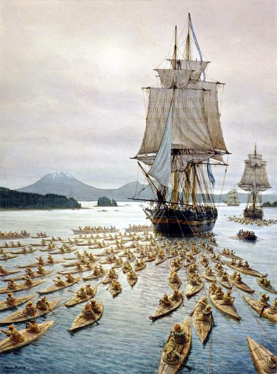
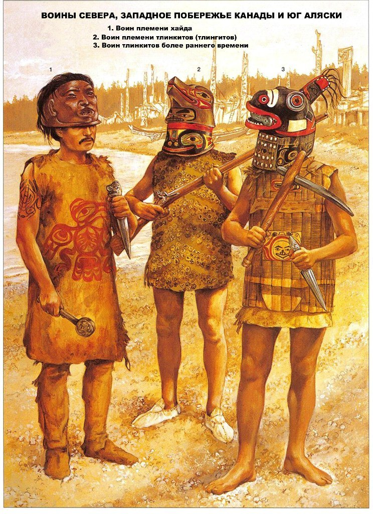
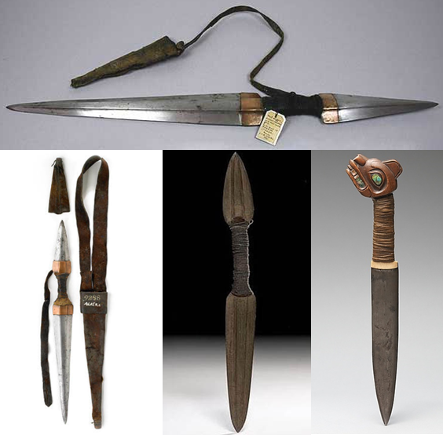

КРАТКАЯ ИНФОРМАЦИЯ ОБО МНЕ
Учусь верстке, постоянно саморазвиваюсь. В свободное время играю в плойку или пекарню, как пойдет.
ИНТЕРЕСНОЕ О РУССКО-ТЛИНКИТСКОЙ ВОЙНЕ
Многое из того, что я расскажу, может показаться малоправдоподобным и больше похожим на сюжет голливудского фильма. Но вы сами можете проверить правдивость моих слов. Возможно, вы краем уха слышали про некую русско-тлинкитскую войну. Иногда ее еще называют русско-индейской. Вы, наверное, подумали, что слово война здесь является некой иронией. Ну мы же знаем эти войны с аборигенами. Ну какая может быть война между индейцами и теми кто в это же самое время давал Наполеону мастер-класс? Небось, как всегда, слегонца пожурили этих краснокожих засранцев, чтобы знали кто здесь хозяин. А что если было наоборот?
На самом деле все с самого начала пошло не так. О первой встрече с ними вам вряд ли кто-то рассказал бы... Потому что не кому было рассказывать. Очень вероятно, что первое знакомство с ними состоялось еще в 1741 году. Но что тогда случилось, на самом деле никто не знает до сих пор.
Во время Великой Северной экспедиции два пакетбота «Святой Пётр» и «Святой Павел» под командованием Витуса Беринга и Алексея Чирикова отправились открывать Новый Свет. Сама эта таинственная история известна по рапорту Чирикова. Именно пакетбот Чирикова достиг берега Америки, именно экипаж Святого Павла первым вступил на землю Аляски. Когда увидели землю, сразу начались поиски бухты, пригодной для высадки. Нужно было пополнить запасы воды. Когда нашли удобную бухту, решили отправить на поиски пресной воды команду из 10 вооруженных человек во главе с молодым штурманом Дементьевым на одной из шлюпок. Всего на корабле было две шлюпки. Договорились, что когда лодка пристанет к берегу, моряки дадут сигнал с помощью специальной ракеты. Предполагалось, что шлюпка вернется тем же днём. Шлюпку с командой спустили на воду, она дошла до берега, зашла за скалы — и исчезла. Ни сигналов, ни ракет, ни выстрелов...
На следующий день экипаж корабля увидел огонь на берегу. Стали палить из пушки, давая сигнал вернуться на корабль. Огонь горел примерно до полуночи, а к утру погас. Никто не возвращался. Чтобы в этом случае сделали герои фильма ужасов? Конечно, отправили бы вторую, последнюю оставшуюся шлюпку. Офицерский совет решил, что, небось, лодка просто повреждена и потому моряки не могут вернуться на корабль. Тем не менее, предчувствие подсказывало, что произошло что-то очень нехорошее. Боцман Савельев должен был высадить плотника, забрать нескольких человек и немедленно возвращаться. Разработали систему сигнализации для разных случаев. С этими наставлениями и отправили шлюпку с небольшой командой в 5 человек. С борта было видно, как шлюпка подошла к берегу... Но никаких сигналов так и не последовало. А шлюпка больше не вернулась.
Через какое-то время на берегу снова появился тот таинственный огонь. Он то исчезал, то снова появлялся. Как будто его периодически чем-то прикрывали и снова открывали. Это был явно сигнал! Но о таких сигналах никто не договаривался.
Плыть к берегу было больше не на чем. Шли уже 8 сутки. Никаких новостей. Было непонятно, что делать дальше. Вдруг, из бухты, куда отправились шлюпки, вышло две лодки. Вначале подумали, что это возвращаются матросы. А потом разглядели, это были не лодки экспедиции. Это были длинные гребные лодки, в одной из них четыре человека. Один, в красной одежде встал на корме крикнул: агай, агай и сделал знак рукой морякам. Моряки пакетбота стали размахивать белыми флагами, призывая лодки подойти к пакетботу. Но лодки развернулись и вошли обратно в залив, из которого вышли. В залив, куда отправлялись русские шлюпки и откуда исходили странные сигналы. Тогда стало ясно, что никто из 15 моряков больше не вернется. Запасы воды подходили к концу, и было решено возвращаться в Петропавловск-Камчатский.
Долгие годы исследователи из разных стран пытались понять, что случилось тем летом на берегу Аляски. Но судьба российских матросов так и осталась неизвестной. На самом деле, есть и другие версии гибели экспедиции: что моряки утонули в прибрежных бурунах, что они не погибли, а еще долго жили на Аляске. Но также вы можете прочитать, как много позднее любимым делом этих туземцев будет исподтишка убить одинокую группу русских колонистов, так чтобы не оставить ни единого следа преступления. Как будто те просто исчезли.
ЕЩЕ НЕМНОГО ИНТЕРЕСНОГО
Первая официальная встреча с тлинкитами, именно так называются эти индейцы, произошла в 1788 году в Якутатском заливе. Встреча прошла мирно. Русские к тому времени закрепились на острове Кадьяк. Казалось, что это открывает перспективы к продвижению российских промысловых партий вдоль побережья. Это было самым началом русско-американской компании. Главной целью наших промышленников были бесценные шкурки морских выдр каланов - они были "золотом" Аляски. Все шло хорошо, никаких конфликтов не предвиделось. Освоение Аляски только начиналось.
Русские землепроходцы привыкли иметь дело с алеутами и эскимосами. Эти туземцы были покорными и покладистыми. Они не только не оказывали сколь бы то ни было заметного сопротивления, но легко превращались в фактических рабов и нещадно эксплуатировались. С реальными воинственными индейцами служащим русско-американской компании еще не приходилось сталкиваться. А тут они столкнулись с одной из самых грозных и хорошо вооруженных наций Северной Америки.Второй раз экспедиция губернатора Аляски Баранова столкнулась с этими урук-хаями тайги на острове Хинчин-брук. Тлинкиты как всегда напали неожиданно. В самое их любимое время - посреди ночь, когда сон самый глубокий. Караульные заметили их, когда эти жуткие монстры в своих деревянных доспехах и звериных шлемах оказались у них перед самым носом. Как будто они появились из самого ночного мрака. Самое жуткое было то, что их не брали ни пули, ни даже картечь. Это потом выяснили, что трехслойный кедровый доспех хрен пробьешь мушкетной пулей. "Стреляй им в голову!" - крикнул кто-то... Но стало только хуже. После попадания в голову эти демоны преисподней поднимались вновь, словно ожившие мертвецы, и снова шли на тебя! Многие в панике стали разбегаться. Кидались в лодки и пытались уплыть. Баранов чудом остался жив, но был ранен. Губернатора Аляски спасло успевшее подойти подкрепление. Тлинкиты отступили, уплыв на своих быстрых лодках. С этого случая Баранов всегда носил под одеждой кольчугу. Но это не помогло ему в будущем.
Несмотря на враждебность тлинкитов русские продолжали продвигаться на юг. В самое сердце тлинкитских земель. Более того, была поставлена задача основать аванпост на острове Ситке. Так была основана печально известная крепость Св. Архистратига Михаила. Напряжение между русскими промышленниками и индейцами росло.Причины испытывать неприязнь к русским безусловно были. Тлинкиты были прирожденными воинами во всех отношениях. И они готовились к масштабной войне. Причины последующего успеха тлинкитов будут не только в том, что они окажутся храбрыми бесстрашными воинами, как это было с другими индейцами. Тлинкиты знали толк в войне во всех смыслах. Разве можно было подумать, что какие-то индейцы окажутся более организованными, и лучше вооруженными, чем русские землепроходцы? Вы видели когда-нибудь индейцев с пушками? А вот у тлинкитов они были. Тлинкиты знали толк в оружии. Решение о начале войны против русских было принято зимой 1802 года в Хуцнуву-куане на великом совет вождей.
Итак, летом 1802 вождь Катлиан возглавил масштабную военную операцию. Целью этой операции было изгнать русских с острова Ситка, где к тому времени уже был воздвигнута Михайловская крепость - крупнейший в регионе форт. Но было бы излишним напряжением сил штурмовать хорошо укрепленную крепость. Гораздо эффективней выпилить всех россиян за пределами крепости. Тлинкиты дождались, когда большая часть мужского населения отправиться на промысел. И вот тогда, чтобы будущим жертвам не было где спастись, Михайловская крепость была уничтожена. В крепости оставалось всего около сотни человек. Да и то, половина из них были женщины и дети. Набег тлинкитов стал неожиданностью. Крепость была окружена с суши и с моря и быстро пала, а перепуганные жители беспощадно вырезаны. Оставшиеся в живых были в ужасе. У них на глазах звероподобные существа резким ударом дубинки размазжили головы нескольких товарищей. Многих поселенцев спасла еще одна уникальная особенность тлинкитов, отличающая их от других индейцев. Тлинкиты ценили рабов. Но выжившим повезло вдвойне. Пока полторы тысячи тлинкитов хозяйничали на пепелище крепости и делили добычу, неожиданно на место трагедии прибыл британский бриг Unicorn и два американских корабля Alert и Globe. Англичане попросили передать пленных русских им и снабдили свою просьбу вежливым и убедительным выстрелом из пушки по индейским лодкам. Тлинкиты выполнили просьбу. Вряд ли тлинкиты испугались. Англичане и американцы были нужны тлинкитам. Русские были плохими торговыми партнерами. Вообще никакими. У русских не было ценного товара на продажу, да и в принципе концепция русской колонизации была рассчитана не на торговлю с аборигенами, а на сбор ясака. А вот с англичанами и американцами у тлинкитов был большой и взаимовыгодный товарообмен. Тлинкиты испытывали гораздо больше неприятностей от оседло живущих русских, чем от англичан или американцев, которые лишь время от времени появлялись из морской дали.